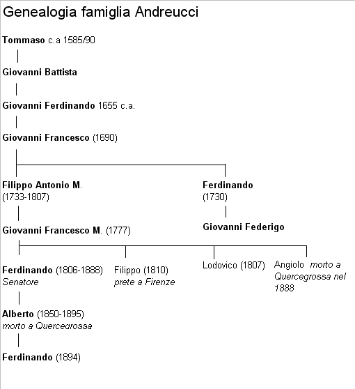

Quercegrossa (Ricordi e memorie)
CAPITOLO II - FAMIGLIE DEL '900
Indice dei Capitoli
Indice Famiglie del '900
ANDREUCCI (1902-1920); possidenti; Quercegrossa.
Non si è ancora spento l'eco della rinomata famiglia Andreucci, possidenti in Quercegrossa sin dalla metà del Seicento e il ricordo corre ancora alla vendita che fecero della loro proprietà ai Mori. Per secoli, secondo l’usanza delle famiglie nobili e della ricca borghesia, si erano portati a Quercegrossa nella loro villa di campagna soltanto per trascorrervi la stagione estiva. Vi fu sì, qualche personaggio della famiglia che vi sostò per periodi più o meno lunghi, ma solo una volta con Giovan Federigo ai primi dell’Ottocento furono annotati come residenti in parrocchia, dimorando essi a Siena nel popolo di S. Stefano in Via della Fogna e trasferendosi poi a Firenze dopo la dominazione francese con la quale si erano compromessi assumendo cariche pubbliche. Ma alla fine dell’Ottocento gli Andreucci, sempre proprietari della villa e delle terre, avevano senz’altro ripreso la stabile dimora a Quercegrossa. Infatti la loro fissa residenza in quegli anni è confermata da don Luigi Grandi nel documento matrimoniale del 1920 di Ferdinando Andreucci nel quale dichiara che il giovane sig. Ferdinando ha dimorato in questa parrocchia (Quercegrossa) dal 1902 al presente, salvo il tempo trascorso sotto le armi. A seguito di questa precisazione e al contrario di altri possidenti che non vi hanno mai preso la residenza, la famiglia Andreucci entra di diritto tra quelle presenti nel nostro paese nel Novecento e mi sembra giusto tracciarne la storia, come per tutte le altre, la quale, inoltre, offre molti elementi di interesse legati ai suoi personaggi più in vista e attivi nella Siena del Sette/Ottocento. Una breve sintesi, però, dell’abbondante materiale raccolto.
Stemma della famiglia Andreucci simboleggiato da
tre monti in campo rosso sovrastati da una stella in campo blu, e una mano con indice puntato verso l'alto in campo color ocra. Famiglia della
ricca borghesia, gli Andreucci non furono ammessi alla nobiltà senese. Soltanto nel 1846, a Firenze, l'avv. Ottavio Andreucci, originario di Pienza, venne ammesso alla nobiltà di Modigliana, al quale fu riconosciuto lo stemma che vediamo. Non ci sono dubbi che Ottavio appartenga ad un ramo della famiglia condividendo lo stesso stemma con gli Andreucci senesi come risulta dal testamento di Giovanni Francesco Andreucci redatto nel 1763 e aperto nel 1766 "...mi consegnò (Giovanni Francesco al notaio) il presente piego legato da piedi con Cordoncino di Seta verde, e bianco, e Sigillato con tre sigilli in cera di Spagna rosa, esprimenti tre Monti, ed una Stella, Arme di sua famiglia..."
La venuta a Quercegrossa degli Andreucci potrebbe essere stata del tutto casuale perché sarebbe forse conseguenza di quella redditizia attività che la famiglia praticava e che continuerà a praticare per tutto il Settecento, consistente nel prestare denaro e aiutare possidenti in difficoltà. Questa lecita attività finanziaria gli consentiva inevitabilmente di appropriarsi di terre e poderi dei tanti debitori insolventi. E così avvenne forse anche a Quercegrossa dove a metà Seicento ottengono la proprietà dei poderi Casino e Quercia Grossa.
Famiglia ricchissima, gli Andreucci avevano le loro radici nella terra di Pienza, dove manterranno casa e continueranno a possedere numerosi beni, e probabilmente a fine Quattrocento si inurbano in Siena e un certo Pio Andreucci nel 1571 fa domanda per essere ammesso alla nobiltà senese. Istanza respinta, ma significativa della posizione sociale della famiglia che presenterà in seguito componenti di un certo rilievo come impiegati nell’amministrazione pubblica, notai e ufficiali nell’esercito come Giovanni Battista, Tenente di Cavalleria da Montagna dell’esercito Toscano.
E’ proprio Giovanni Battista che nel 1668 presenta richiesta all’Arcivescovo di Siena, insieme ai suoi mezzaioli, per l’unione del podere Casino alla parrocchia di Quercegrossa, e in quello stesso anno Francesco Andreucci, in altro documento, dichiara di abitare nella sua villa di Quercegrossa dal 1662.
In quegli anni (1657) la famiglia di Francesco del fu Tommaso abita in casa propria in S. Stefano a Siena, dove possiede altre tre case. La moglie Vittoria gli ha dato tre femmine e un maschio chiamato Fabio ma del quale non ci sono notizie. Francesco è nato a Pienza e, come lui dichiara, dal 1650 abita in Siena. Nel 1672 lo ritroviamo risiedere in S. Giovanni insieme alla famiglia del defunto Tenente Giovanni Battista. Francesco è rimasto solo dopo i probabili matrimoni delle figlie e la morte della moglie e del figlio Fabio. Abitano con lui la cognata vedova Orsola Fanelli con i suoi tre figli Giovanni Ferdinando di 21 anni, Virgilio di 8 e Tommaso Antonio di 7. La permanenza in S. Giovanni si protrae per breve tempo, quindi la famiglia rientra nell’abitazione di S. Stefano. Non avendo eredi Francesco, la continuità della famiglia è data da Ferdinando di Giovanni Battista, nato nel 1655 circa, a Pienza.

Giovanni Ferdinando (Ferdinando)
Egli, che "da piccolino venne a Siena", dopo un periodo di studi trascorso a Roma dal 1673 al 1679, si avvia alla professione di notaio che svolge nello studio dello zio Francesco in Siena. Nel 1690 prende moglie sposando, forse in Siena, Costanza dei Nelli di Fonterutoli. Costanza, orfana giovanissima del fu Carlo, è sotto la tutela del cognato Ariodante Buonfigli, marito della sorella Maria. Dall’età di sei anni ella abitava presso le monache del Rifugio e, quando usciva, si recava in casa della sorella in S. Desiderio. Sposò Ferdinando nei primi mesi del 1690 all’età di 18 anni e il 20 dicembre di quell’anno nasceva suo figlio Giovanni Francesco. Ma la sua felicità di sposa e di mamma terminò presto. Infatti, non passarono quindici giorni che il 5 gennaio giaceva cadavere nella chiesa di S. Stefano. Da qui fu trasportata a S. Domenico e, dopo le esequie celebrate da 25 sacerdoti e altri religiosi, venne deposta in una cappella e la mattina seguente nel sepolcro del SS. Rosario. Trascorso il periodo di lutto, Ferdinando, a fine 1693 convola a nuove nozze con Calidonia, una giovane della nobile famiglia Bonci della città di Chiusi, che nel 1694 ha la prima delle dieci maternità e gli dà Marilena o Madrilena. Tra i suoi figli si ricorda il sacerdote Giuseppe, registrato sempre come Giuseppe Bonci, “mio fratello carnale” secondo le parole di Giovanni Francesco. Ferdinando entra in possesso di un piccolo oratorio presso S. Regina che restaurerà nel 1708 e otterrà l’autorizzazione al culto.
Giovanni Francesco
Con Giovanni Francesco continua l'attività notarile in famiglia che egli trasmette al figlio Luigi. Giovanni Francesco, erede universale dei beni di Quercegrossa, sposa verso il 1723/24 Cleria Gini e avrà 10 figli che, oltre al ricordato notaio Luigi, vanno ricordati Ferdinando del 1730, Tenente nelle milizie di Sua Maestà Imperiale e padre di Giovanni Federigo che troveremo abitare a Quercegrossa, proprietario della villa e compromesso in una situazione debitoria nella quale è aiutato dal cugino Giovanni Francesco, figlio di Filippo. Questo Filippo, altro figlio di Giovanni Francesco, di professione “Riscontro di Dogana”, che nel 1790 abita in S. Pietro alle Scale, salta alla ribalta senese nel 1799, quando l’occupante francese lo nomina responsabile della requisizione degli argenti nelle chiese, essendo uno dei componenti del Governo cittadino. Egli opera con una discreta solerzia e procede alla confisca in un clima di totale e personale avversione alle gerarchie ecclesiastiche. Poi Ignazio, altro fratello che eredita per poco tempo i beni di Quercegrossa, e infine Marianna, la sorella che sposa Sebastiano Palagi, il padre di quel Pio che sarà notaio e cancelliere arcivescovile della diocesi senese e una tra le figure più note nella Siena di quel tempo. Naturalmente Giovanni Francesco (nato nel 1777), figlio del detto Filippo, aiutando lo zio Federigo, diviene unico erede dei beni Andreucci. Sposa Isabella, della famiglia senese dei Pallini, dalla quale ha otto figli. Influenzato probabilmente dal padre, fu di simpatie giacobine che gli costarono sei mesi di carcere a Volterra nel 1800 e la sospensione del suo impiego alla Dogana. Con l’arrivo dei francesi nel 1799, il 22enne rivoluzionario si era reso famoso per una iniziativa definita come un “tentativo di democraticizzare il Casin de' Nobili”, quando, con la forza, aveva aperto le porte di Circolo alla plebaglia per una serata di ballo alla quale intervennero artigiani usciti di bottega e malvestiti. Queste sue simpatie, così evidenti, gli giovarono però nel 1808, quando al tempo della seconda e più duratura dominazione francese venne inserito nell’elenco dei notabili senesi comprendente nobili patrizi e borghesi, e ottenne l’incarico di “Ricevitore del Comune di Siena” ossia di cassiere delle tasse delle varie Comunità. Per tal incarico doveva versare, per Legge, una cauzione di 15.000 franchi, una somma notevole, essendo il suo reddito annuo denunciato ammontante a 3.500 franchi. In un primo momento tentò di garantire la cifra con i beni immobili (forse Quercegrossa), ma ciò gli fu rifiutato e con una certa difficoltà versò la cauzione in due rate per avere un incarico che gli avrebbe fatto guadagnare un massimo di 2.000 franchi, imposti come limite dalla legge. La successiva ritirata francese deve aver creato seri problemi di convivenza agli Andreucci e ai loro affari in città se, nel 1817, la famiglia si trasferisce a Firenze e il 5 giugno 1819 vendono le loro case in Via della Fogna, in Camollia, nella cura di S. Stefano, e affittano la villa e poderi di Quercegrossa al possidente Bacci. Nel 1825 vediamo dal catasto risultare proprietari di Quercegrossa i quattro figli di Giovanni Francesco: Ferdinando, Lodovico, Filippo e Angelo.
Ferdinando
Mentre Filippo si fa prete e Angiolo e Lodovico probabilmente restano celibi, il solo Ferdinando si sposa tramandando i beni alla sua discendenza.
 Probabile ritratto del senatore Ferdinando Andreucci.
Probabile ritratto del senatore Ferdinando Andreucci.
Egli diventerà un illustre avvocato attivo in Firenze e uomo politico; farà parte del Governo provvisorio Toscano nel 1848 come ministro dell’Istruzione e nel 1859 è eletto deputato nell’Assemblea Toscana. Fu poi Deputato del Regno d’Italia dal 1861 al 1871 e Senatore dal 1871. Morì l'11 febbraio 1888. Dopo un ventennio a Firenze la famiglia Andreucci, che non ha mai interrotto i suoi rapporti con Quercegrossa e ha mantenuto un certo potere economico, investe ancora nelle nostre campagne nel 1841 quando tutti i fratelli acquistano le Gallozzole e l’Olmicino, poi nel 1852 con la compera da parte del solo Ferdinando della fattoria di Petroio e del podere Erede, e infine nel 1867 con l’acquisto della Casanova della Torre, sì che in quell’anno gli Andreucci risultano proprietari di una vasto comprensorio agricolo che comprende oltre i poderi suddetti anche quelli di Quercegrossa, del Casino e della Magione. Un patrimonio eccezionale, senza precedenti nella nostra parrocchia. Con la morte del senatore ereditano il figlio Alberto e l’anziano fratello Lodovico che intanto ha ripreso la residenza a Siena, ma dal 1891, alla sua morte, Alberto diviene l’unico proprietario dei beni Andreucci.
Alberto
Alberto Andreucci nacque a Firenze il 10 luglio 1850 (11 luglio 1855 nel testo stampato: errore indottomi da un sito d'arte su internet che reca la data sbagliata), nel popolo della Badia Fiorentina luogo di dimora della famiglia.
Egli, avvocato, vive i successi professionali e politici del padre e gode di quell'ottima situazione economica che gli garantisce una vita tranquilla e per questo segue il suo istinto di pittore ed entra nel giro dei macchiaioli fiorentini e diventa un seguace di Telemaco Signorini come ci ricorda il famoso Comanducci, un manuale sulla pittura italiana dell’Ottocento che ci conferma le memorie ancor vive dei suoi trascorsi a Quercegrossa quando ospitava lo stesso Signorini e altri pittori del giro. La foto allegata, che, come si rammenta, rappresenta il senatore Ferdinando, fa parte di quei numerosi saggi di pittura estemporanea lasciati nella villa e molte di quelle tavolette servirono più tardi per costruire cassette per gli utensili, come quella ricordata. Altri due dipinti, opere di Alberto Andreucci di quel periodo di fine Ottocento, sono giunti fino a noi, come quello che raffigura il portone d’ingresso alla Villa, del 1885, e la veduta di Quercegrossa donato al fattore Raffaello Socci. Solo il quadro con l’ingresso alla villa è firmato, ma è plausibile attribuirle anche l’altro, come da parere di esperti, e considerando il fatto di essere un regalo di Alberto al suo fattore. Tra le sue opere sono ricordate vedute della campagna senese, di Piancastagnaio e del Monte Amiata.
 |
Atto di nascita di Alberto Andreucci a Firenze
Probabilmente la sua arte e i suoi amici lo portarono a muoversi e frequentare località diverse e conoscere uomini e donne e una di queste gli lasciò un regalo che l’avrebbe portato alla tomba. Condusse probabilmente una vita spensierata e spendereccia che segnò la fine economica della famiglia. Alberto morì nella sua villa di Quercegrossa e nella registrazione della sua morte il parroco Rigatti annota le seguenti, significative, parole: “Morì dell’età di anni 45 nella sua villa detta Quercegrossa ... il sottoscritto parroco fu chiamato dal moribondo negli ultimi istanti e gli impartì l’assoluzione e il Sacramento della Estrema unzione sotto condizione e il giorno 4 settembre a ore 4 e 30 esalò l’ultimo respiro. La di lui salma venne deposta nella Cappella del cimitero di Petroio per disposizione dell’autorità sanitaria fino a nuove disposizioni perché era affetto di lebbra asiatica“. Il tono quasi distaccato del parroco fa pensare che i rapporti trai due, ossia dell’Andreucci e la Chiesa, non fossero dei migliori, come era d’altronde nella tradizione di famiglia. Per quanto riguarda la “lebbra asiatica” in realtà si tratta di sifilide, che giunta al terzo grave stadio presenta la pelle squamata e macchiata, proprio come nella lebbra (ATTENZIONE!! Certe valutazioni e conclusioni da me fatte sulla vita e morte di Alberto Andreucci sono frutto di supposizioni personali - vedi i due "Probabilmente" - e informazioni datemi da altri, ritenuti esperti, per quanto riguarda la malattia che pose fine ai suoi giorni. Pertanto il testo non va preso alla lettera, ma è "con riserva" in mancanza di notizie certe e inconfutabili. Avevo omesso questa mia precisazione nel testo stampato per un pura dimenticanza). Alberto Andreucci lasciò vedova Giulia Tassi, fiorentina, che rimase a Quercegrossa col figlio Ferdinando fino al 1918, quando morì nella villa. Di lei risulta un cambio di residenza da Quercegrossa a Firenze nel 1911. Una registrazione del 15 febbraio 1892 ci dice che nella villa di Quercegrossa muore Corinna Squilloni di 48 anni, “moglie del Nobile Sig. Avvocato Alberto Andreucci”. Sarebbe quindi la prima moglie di Alberto, il quale, poco prima di morire, si sarebbe risposato con la detta Giulia Tassi, che gli partorisce Ferdinando l’8 marzo 1894, in Firenze, nel popolo di S. Marco Vecchio. Ferdinando ereditò tutte le proprietà paterne, ma certamente insieme ad esse anche tanti debiti sì da dare il via alle vendite dei poderi, curate dalla mamma usufruttuaria, scaglionate nel tempo, con il risultato da alienare ogni bene e restare a mani vuote nello spazio di vent’anni. Infatti, non era finito il lutto che deve cedere Petroio a Cesare Pallini nel 1896, cui fanno seguito nel 1900, sempre al Pallini, le vendite dei poderi Gallozzole, Erede e Casanova della Torre. Tuttociò però non fu sufficiente e così presero il volo anche il Casino (1905), l’Olmicino (1905) e la Magione (1907). Rimasero la villa e il podere detto Quercia Grossa, ma, come sappiamo, in due diversi contratti del 1916 e 1919, il tutto venne acquistato dalla famiglia Mori, che vi si insediò. Ferdinando, dopo “aver servito la patria” nella Grande guerra, giunto all’età di 26 anni si sposa con Raffaella Pucci del popolo di S. Giusto, diocesi di Fiesole. Il matrimonio è celebrato il 26 luglio 1920 e la sposa torna per quattro giorni nella villa, dove ancora risiede Ferdinando. Il 31 luglio 1920 entrambi fanno partenza per Siena, per poi sparire. L’ultimo Andreucci partì in un’assolata giornata di luglio e, piuttosto indispettito e adombrato, consegnò le chiavi a Raffaello Mori, affiancato dal figlio 13enne Elio, il mi’ babbo, che mi ha raccontato il fatto.
Inizio pagina
Indice famiglie del '900
Indice dei Capitoli
|